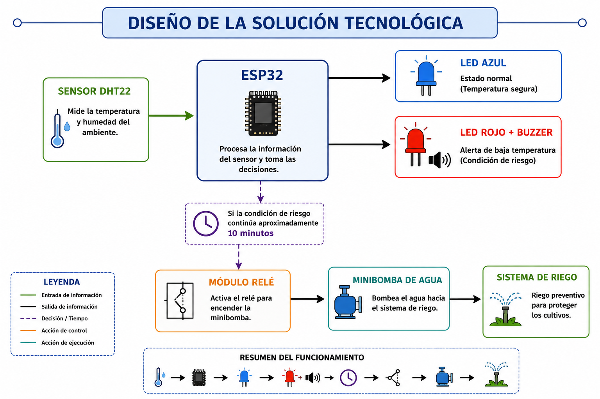
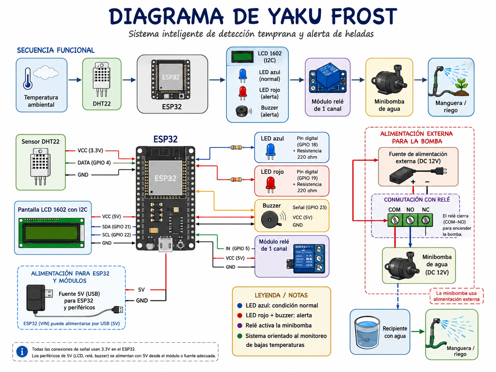
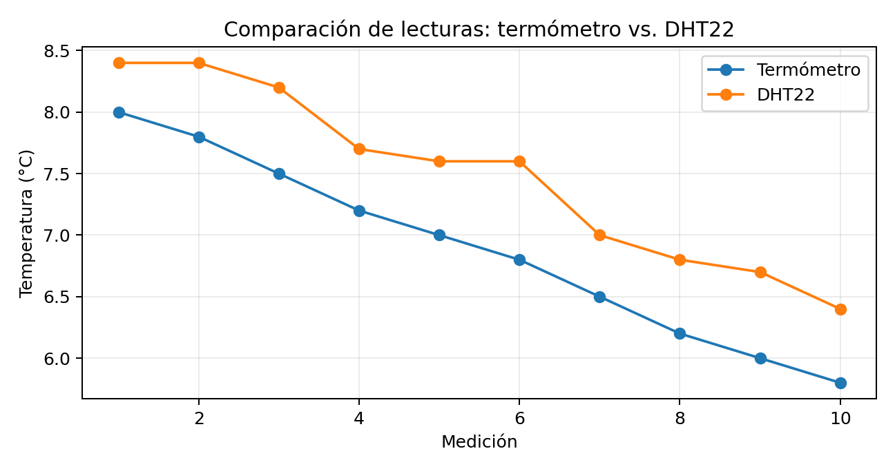
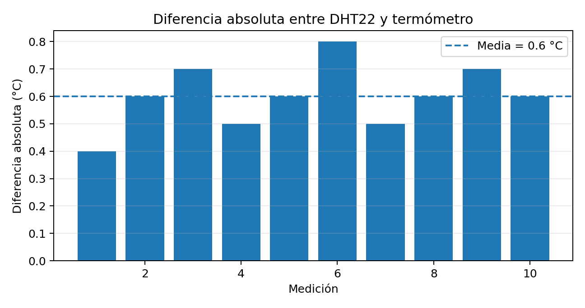
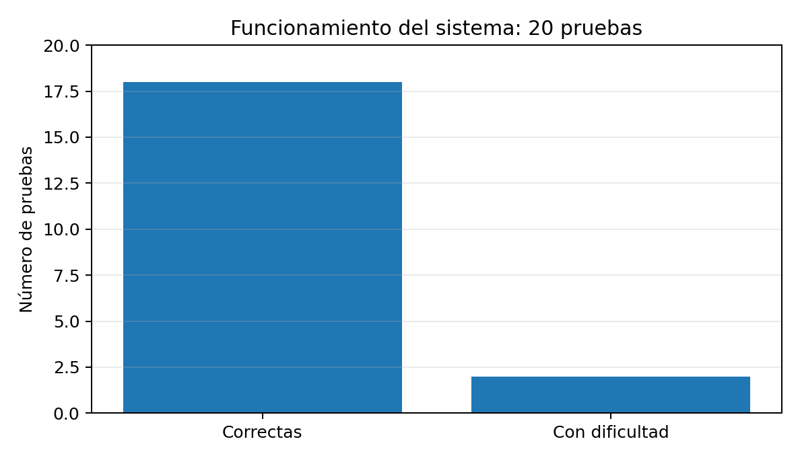
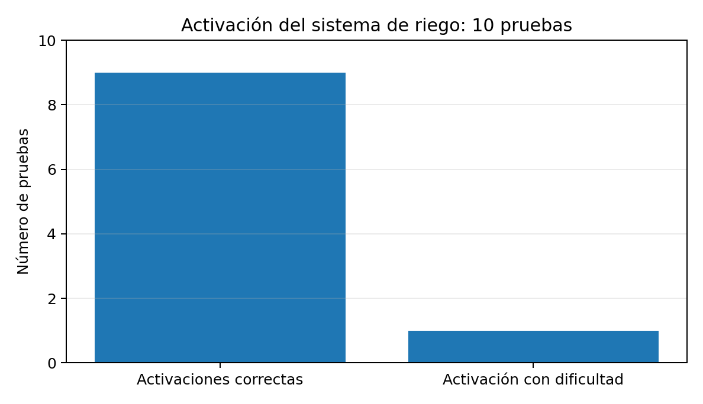
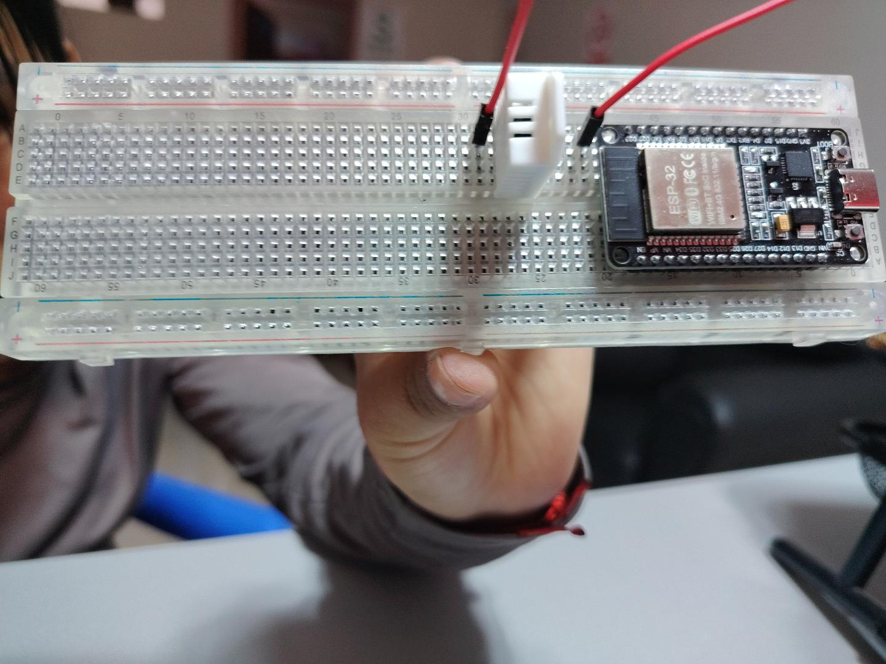
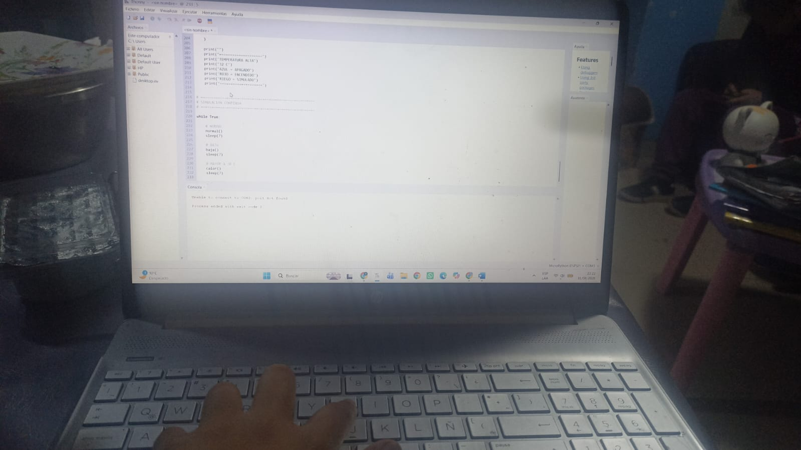
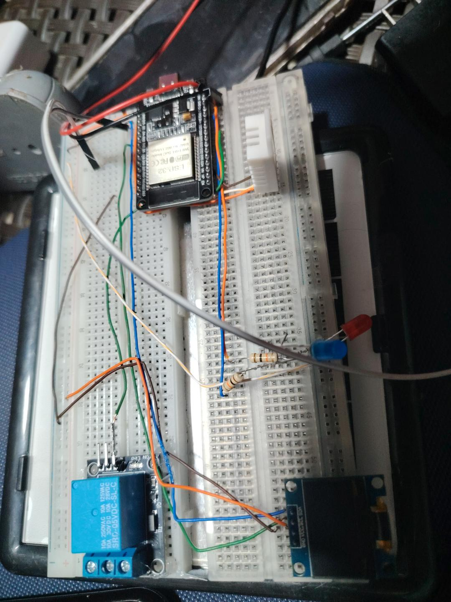
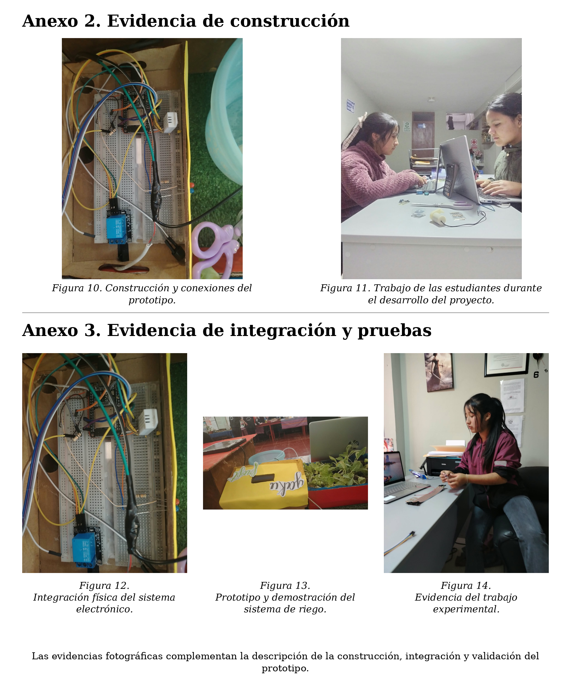

Sistema automatizado de detección temprana de bajas temperaturas y alerta para cultivos andinos de Pomabamba.
Un prototipo que convierte la temperatura ambiental en información, alerta y una respuesta de riego programada mediante DHT22, ESP32 y un conjunto de actuadores.
En Pomabamba, las caídas de temperatura durante las noches frías representan un riesgo para las familias agricultoras y sus cultivos. El proyecto identifica como problema tecnológico la ausencia de un sistema accesible que mida continuamente la temperatura, comunique una condición de riesgo y ejecute una respuesta programada sin monitoreo permanente.
Medición continua de la temperatura ambiental mediante el sensor DHT22.
Comunicación visual y sonora mediante LCD, LEDs y buzzer.
Activación programada del conjunto relé–minibomba para iniciar la salida de agua.
El DHT22 constituye la entrada; el ESP32 realiza el procesamiento; LCD, LEDs y buzzer comunican el estado; y el relé y la minibomba ejecutan la respuesta programada.
El sistema muestra el estado correspondiente y mantiene la alerta sonora desactivada. El LED azul representa la condición normal.
Se activa el LED rojo y el buzzer; si la programación lo indica, el ESP32 envía una señal al relé para controlar la minibomba.
| Temperatura / rango | Uso experimental | Interpretación |
|---|---|---|
| 15 °C | Comprobación de condición normal | Verificación sin condición de alerta |
| 8–7 °C | Inicio y seguimiento del descenso | Condición experimental de advertencia |
| 6–5 °C | Continuación del descenso | Mayor nivel de atención dentro de las pruebas |
| 2 °C | Prueba de condición extrema baja | Comprobación de la lógica de activación |
| 32 °C | Prueba de condición alta | Comprobación de la lógica del programa |
Procesamiento y control
Medición de temperatura y humedad
Visualización
Señales visuales
Alerta sonora
Control de la minibomba
Respuesta mediante agua
Conexiones
Protección de LEDs
Alimentación
Reserva para demostración
Programación
| Material | Cantidad | Costo aprox. (S/) |
|---|---|---|
| ESP32 DevKit V1 | 1 | 35.00 |
| DHT22 | 1 | 18.00 |
| LCD 1602 I2C | 1 | 15.00 |
| LED azul + rojo | 2 | 2.00 |
| Resistencias | Varias | 1.00 |
| Buzzer | 1 | 5.00 |
| Relé 1 canal | 1 | 8.00 |
| Minibomba | 1 | 15.00 |
| Manguera | 1 | 4.00 |
| Protoboard | 1 | 12.00 |
| Cables jumper | Varios | 10.00 |
| Fuente | 1 | 10.00 |
| Cable USB | 1 | 8.00 |
| Recipiente | 1 | 2.00 |
| Envío | — | 10.00 |
| Costo total reportado | S/ 155,00 | |
La laptop y el software Thonny/MicroPython no se contabilizaron como gasto porque ya estaban disponibles o son gratuitos.
7 jornadas · 14 h
3 jornadas · 6 h
4 jornadas · 8 h
12 jornadas · 24 h
2 jornadas · 4 h
2 jornadas · 4 h
Se realizaron 10 comparaciones con un termómetro de referencia en el mismo ambiente. La diferencia absoluta media fue de 0,6 °C; la mayor diferencia individual fue 0,8 °C y la menor 0,4 °C.
En 20 pruebas con diferentes condiciones de temperatura, 18 respuestas coincidieron con lo programado y 2 presentaron alguna dificultad.
El prototipo fue observado durante un descenso de 8,0 °C a 5,0 °C, permitiendo evaluar su comportamiento durante una trayectoria de enfriamiento y no solo ante un valor aislado.
| N.º | Termómetro °C | DHT22 °C | Diferencia abs. °C |
|---|---|---|---|
| 1 | 8.0 | 8.4 | 0.4 |
| 2 | 7.8 | 8.4 | 0.6 |
| 3 | 7.5 | 8.2 | 0.7 |
| 4 | 7.2 | 7.7 | 0.5 |
| 5 | 7.0 | 7.6 | 0.6 |
| 6 | 6.8 | 7.6 | 0.8 |
| 7 | 6.5 | 7.0 | 0.5 |
| 8 | 6.2 | 6.8 | 0.6 |
| 9 | 6.0 | 6.7 | 0.7 |
| 10 | 5.8 | 6.4 | 0.6 |
| Variable evaluada | n | Resultado principal | Interpretación |
|---|---|---|---|
| Diferencia DHT22–termómetro | 10 | 0.6 °C media | Lecturas cercanas en la prueba |
| Funcionamiento global | 20 | 90 % correcto | Desempeño funcional en las condiciones evaluadas |
| Tiempo de respuesta | 5 | 1.4 s promedio | Respuesta rápida dentro del prototipo |
| Activación del riego | 10 | 90 % correcto | Respuesta automática funcional en las pruebas |
El informe incluye evidencias fotográficas de la construcción, programación, integración y pruebas del prototipo, además del diagrama general de la solución.










El contenedor y la manguera deben mantenerse alejados del ESP32 y la protoboard. Se debe apagar la energía antes de modificar conexiones y trabajar sobre una superficie seca.
El principal impacto ambiental potencial es el consumo de agua. La activación programada permite regular el uso del recurso dentro del prototipo.
La respuesta mediante agua debe evaluarse considerando caudal, cobertura, continuidad y condiciones climáticas específicas.